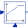

AddOutput the sum of the two inputs |
Information
This information is part of the Modelica Standard Library maintained by the Modelica Association.
This blocks computes output y as sum of the two input signals u1 and u2:
y = k1*u1 + k2*u2;
Example:
parameter: k1= +2, k2= -3
results in the following equations:
y = 2 * u1 - 3 * u2
Parameters (2)
| k1 |
Value: +1 Type: Real Description: Gain of input signal 1 |
|---|---|
| k2 |
Value: +1 Type: Real Description: Gain of input signal 2 |
Connectors (3)
| u1 |
Type: RealInput Description: Connector of Real input signal 1 |
|
|---|---|---|
| u2 |
Type: RealInput Description: Connector of Real input signal 2 |
|
| y |
Type: RealOutput Description: Connector of Real output signal |
Used in Examples (1)
|
Modelica.Blocks.Examples.NoiseExamples Demonstrates how to compute distribution densities (= Probability Density Function) |
Used in Components (11)
|
Modelica.Blocks.Examples.NoiseExamples.Utilities.Parts Synchronous induction machine with current controller and measurement noise |
|
|  |
Modelica.Blocks.Continuous P, PI, PD, and PID controller with limited output, anti-windup compensation, setpoint weighting and optional feed-forward |
|
Modelica.Electrical.Machines.Examples.ControlledDCDrives.Utilities Limited PI-controller with anti-windup and feed-forward |
|
|
Modelica.Electrical.Machines.Sensors Rotor lagging angle |
|
|
Modelica.Electrical.Machines.Utilities Voltage controller |
|
|
Modelica.Electrical.MultiPhase.Sensors threephase Aron sensor for active power |
|
|
Modelica.Electrical.PowerConverters.DCDC.Control Linearly transforms voltage to duty cycle |
|
|
Modelica.Electrical.QuasiStationary.MultiPhase.Sensors threephase Aron sensor for active power |
|
|
Modelica.Magnetic.QuasiStatic.FundamentalWave.Sensors Rotor lagging angle |
|
|
Modelica.Magnetic.QuasiStatic.FundamentalWave.Utilities Current controller |
|
|
Modelica.Thermal.FluidHeatFlow.Examples.Utilities Ramp going up and down |